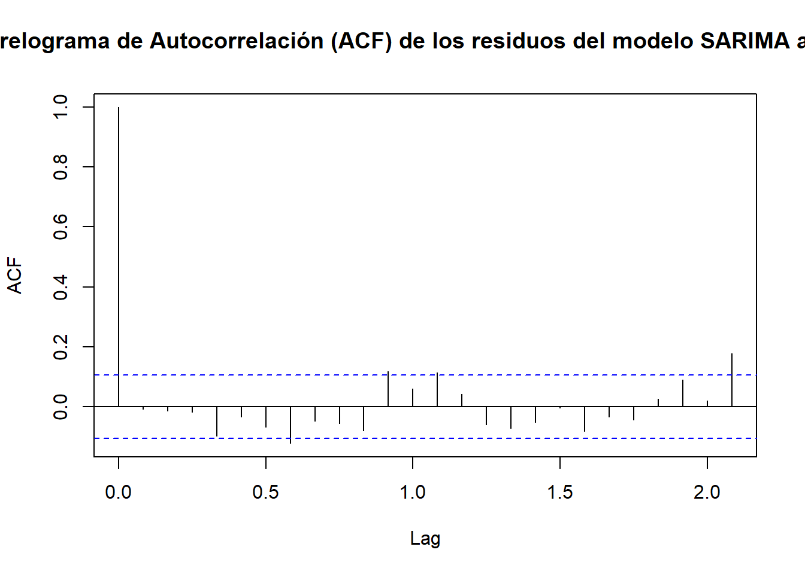
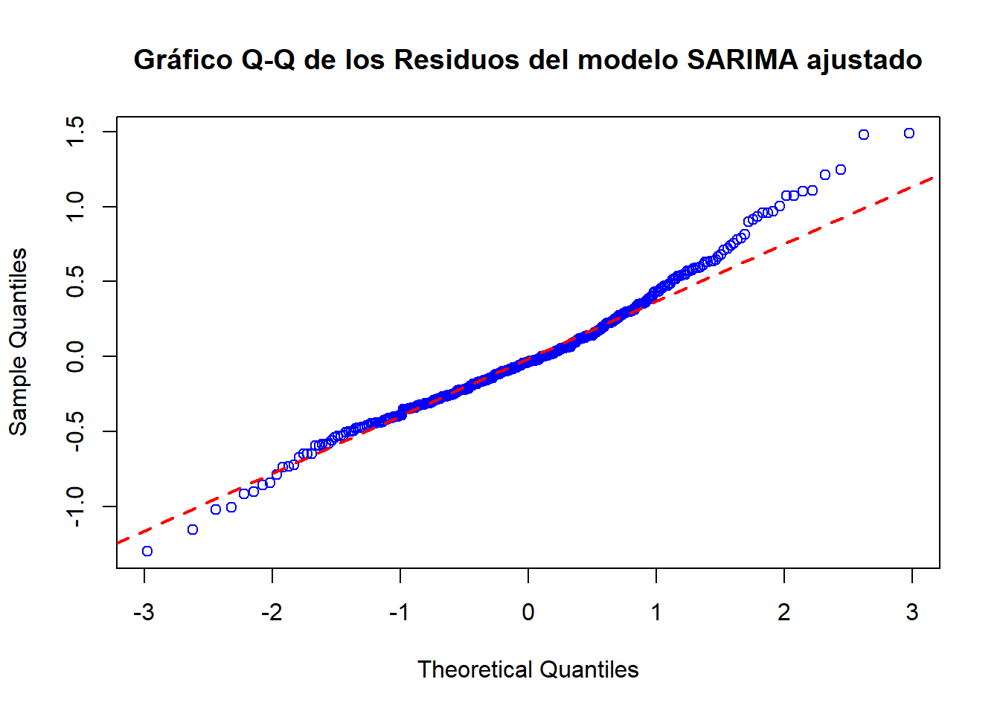

Chapter 6 Ajuste a un modelo lineal y estacionario
El ajuste de una serie de tiempo a un modelo lineal y estacionario es un paso fundamental en el análisis de series temporales por varias razones:
- Simplificación del Análisis:
Linealidad: Suponer una relación lineal entre las variables y simplifica significativamente el análisis matemático y estadístico.
Estacionariedad: Al asumir que las propiedades estadísticas de la serie (media, varianza, autocorrelación) no cambian con el tiempo, se facilita la identificación de patrones y la realización de pronósticos.
- Interpretabilidad de los Resultados:
Coeficientes: Los coeficientes de un modelo lineal tienen una interpretación clara, lo que facilita la comprensión de la relación entre las variables.
Significancia estadística: Al realizar pruebas de hipótesis, se puede determinar si los coeficientes son estadísticamente significativos, lo que ayuda a identificar las variables que realmente influyen en la serie.
- Base para Modelos Más Complejos:
Modelos ARIMA: Muchos modelos ARIMA (AutoRegressive Integrated Moving Average) se construyen sobre la base de series estacionarias.
Modelos de Descomposición: La descomposición de una serie en tendencia, estacionalidad y componente irregular suele realizarse sobre una serie estacionaria.
- Pronósticos:
Fiabilidad: Los modelos lineales y estacionarios suelen proporcionar pronósticos más confiables a corto plazo.
Intervalos de confianza: Permiten calcular intervalos de confianza para los pronósticos, lo que brinda una medida de la incertidumbre asociada a las predicciones.
6.1 Comprobación de Estacionalidad
La prueba de Dickey-Fuller (ADF) proporciona evidencia sólida de estacionariedad en la serie de tiempo. Los resultados del test, muestran que el estadístico de prueba ADF es negativo y el valor p asociado es significativamente menor a 0.05. Estos permiten rechazar la hipótesis nula de que la serie tiene una raíz unitaria, sugiriendo que la media, varianza y estructura de autocorrelación de la serie son constantes en el tiempo. Lo anterior concordante con lo descrito en el capítulo 3.
| Prueba | Estadístico | p_value | Hipótesis_Nula | |
|---|---|---|---|---|
| Dickey-Fuller | Aumentada | -5.591265 | 0.01 | Serie no estacionaria |
6.2 Funciones de Autocorrelación (ACF) y Autocorrelacion Parcial (PACF)
ACF (Función de Autocorrelación): Mide la correlación entre una serie de tiempo y una versión retrasada de sí misma. Nos ayuda a identificar patrones repetitivos a lo largo del tiempo.
La figura 5.1 presenta el correlograma de la Función de Autocorrelación (ACF) de la serie temporal de temperatura superficial del mar (TSM), en el cual se observan picos significativos con una confianza del 95% en intervalos consecutivos de 6 meses (cada 0.5 lags), lo que indica una fuerte autocorrelación en estos periodos. Además, como se evidenció previamente en la prueba de ADF, la serie se considera estacionaria. Sin embargo, los valores de la ACF no muestran un decaimiento rápido, lo que sugiere la presencia de una estacionalidad pronunciada. Este comportamiento se debe a que los datos en los puntos estacionales (cada 6 meses) están correlacionados, generando picos periódicos en la ACF.
Adicionalmente, si la serie presenta memoria a largo plazo (es decir, autocorrelaciones persistentes), los valores de la ACF tienden a decaer más lentamente, aun siendo estacionaria. Este fenómeno podría estar asociado a patrones no modelados o ciclos largos. Asimismo, la presencia de componentes adicionales en la serie (como ciclos de mediano plazo o eventos externos) podría estar influenciando la autocorrelación en diferentes lags.
PACF (Función de Autocorrelación Parcial): Mide la correlación entre dos puntos de una serie de tiempo, eliminando el efecto de las correlaciones en los rezagos intermedios. Es útil para identificar el orden de un modelo ARIMA.
La figura 5.2 muestra el correlograma de la Función de Autocorrelación Parcial (PACF) de la serie temporal de temperatura superficial del mar (TSM, observando un patrón que facilita la determinación del grado del modelo AR (p). En primer lugar, se observa un pico significativo en lag=0, lo que es esperado, ya que refleja la autocorrelación entre los valores actuales y los más cercanos en el tiempo. Después de este pico inicial, la gráfica muestra una caída rápida hacia cero, lo que indica que la autocorrelación se desvanece rápidamente con el aumento de los rezagos. A pesar de esto, se observan picos menores en los lags 0.9 y 1.2, lo que sugiere la posible presencia de patrones cíclicos o influencias externas que afectan la serie, tales como ciclos anuales o factores estacionales. Sin embargo, dado que la autocorrelación cae rápidamente después del primer rezago, el grado del modelo AR se puede considerar p=1, ya que solo se necesita un rezago para capturar la dependencia significativa en los datos, sin embrago la existencia de los otros picos significativos podrían sugerir un grado más alta.


6.3 Implementación del Modelo ARIMA Estacional
El modelo ARIMA, que son las siglas de AutoRegresivo Integrado de Media Móvil, es una herramienta estadística utilizada para analizar y predecir series temporales, modelando la relación entre los valores actuales y pasados de una variable, así como los errores aleatorios asociados a esos valores. ARIMA consta de tres componentes principales: el AutoRegresivo (AR), que captura la relación entre el valor actual y sus rezagos; el Integrado (I), que busca hacer que una serie no estacionaria se vuelva estacionaria mediante la diferenciación; y la Media Móvil (MA), que modela la relación entre el valor actual y los errores de los rezagos anteriores. Sin embargo, cuando una serie temporal presenta una componente estacional, es decir, patrones que se repiten a intervalos regulares, se puede utilizar el modelo SARIMA (ARIMA Estacional). Este modelo extiende ARIMA al incorporar términos estacionales, lo que permite capturar de manera más precisa los efectos de la estacionalidad. El SARIMA añade cuatro parámetros estacionales (P, D, Q, S) para modelar las relaciones autoregresivas, de diferenciación, de media móvil y la periodicidad estacional, mejorando así la precisión en las predicciones cuando existen ciclos o patrones regulares en los datos. De esta forma, ARIMA es útil para series no estacionales, mientras que SARIMA es la variante indicada para series con estacionalidad, como es el caso de la TSM, donde en capítulos anteriores se demostró la presencia de estacionalidad en la señal.
6.3.1 Ajuste del Modelo SARIMA
Para ajustar el modelo ARIMA estacional automáticamente, se utiliza la función auto.arima(), que selecciona el mejor modelo ARIMA (o SARIMA) basándose en criterios de información como el AIC (Criterio de Información de Akaike) y el BIC (Criterio de Información Bayesiano). Ambos criterios sirven para evaluar la calidad de un modelo, penalizando aquellos que son más complejos para evitar el sobreajuste. El AIC mide el equilibrio entre el ajuste del modelo y su complejidad, favoreciendo modelos con menor error y menos parámetros, mientras que el BIC realiza una penalización más fuerte a los modelos complejos, especialmente cuando se tienen muchos datos. En general, el AIC tiende a seleccionar modelos más complejos que el BIC, lo que hace que el BIC sea más conservador. Ambos criterios ayudan a encontrar un modelo con buen ajuste y parsimonia, y auto.arima() los utiliza para seleccionar el modelo óptimo, ajustando también los componentes estacionales si es necesario.
## [1] "ARIMA(3,1,0)(0,0,2)[12]"El mejor modelo SARIMA ajustado por la función auto.arima (ARIMA(3,1,0)(0,0,2)[12]) indica que:
AR(3): El modelo incluye tres términos autorregresivos, lo que indica que el valor actual de la serie depende linealmente de los tres valores anteriores. I(1): Si bien el test ADF indicó estacionariedad, el modelo suguiere una no estacionaria en la media de la serie, por tanto se requiere una diferenciación de primer orden para hacerla estacionaria. Esto indica que existe una tendencia o un cambio de nivel en la serie. MA(0): No hay términos de media móvil, lo que significa que el valor actual no depende directamente de los errores pasados. (0,0,2)[12]: La parte estacional del modelo indica que hay un componente estacional de orden 2 con un período de 12 (posiblemente mensual). Esto sugiere que hay un patrón repetitivo cada 12 períodos.
6.3.2 Representación gráfica del modelo SARIMA ajustado
Punto de Cambio
El análisis de puntos de cambio es un complemento importante en el estudio de series temporales, ya que permite identificar alteraciones significativas en las propiedades de la serie, como cambios en la media o la tendencia. El método AMOC (At Most One Change) es una técnica estadística diseñada para detectar un único punto de cambio en una serie temporal, asumiendo que, si existe, afecta de forma abrupta la estructura de la serie. Este método se utiliza para evaluar si hay evidencia de un cambio estructural que pueda justificar ajustes adicionales en el modelado, como la división de la serie en segmentos o la incorporación de términos adicionales que expliquen el cambio.
En el caso específico analizado, la gráfica resultante del análisis AMOC muestra una serie de tiempo con fluctuaciones alrededor de un valor medio relativamente estable a lo largo del tiempo. No se observa una tendencia clara al alza o a la baja, pero sí se aprecian algunos picos y valles que podrían indicar cierta estacionalidad o eventos puntuales que afectan a la serie. Por lo tanto, no se sugiere realizar ajustes adicionales al modelo ARIMA seleccionado, ya que parece capturar de manera adecuada las dinámicas de la serie original.
Modelo Ajustado
La predicción generada por el modelo auto.arima exhibe un comportamiento estable para los años siguientes (línea verde). No obstante, a medida que el pronóstico se extiende más allá del último dato observado, la incertidumbre asociada a los valores futuros aumenta progresivamente (ampliación del intérvalo de confianza). Este fenómeno es completamente esperado, ya que los modelos predictivos enfrentan mayores desafíos para capturar con precisión la evolución de la serie temporal a largo plazo, debido a la acumulación de posibles errores y la mayor influencia de factores externos no modelados.
6.4 Analisis de residuos
El análisis de los residuos es una etapa fundamental después de implementar un modelo, ya que permite evaluar su desempeño y adecuación. Los residuos, que son las diferencias entre los valores observados y los predichos, deben comportarse de manera aleatoria, sin patrones evidentes, y estar distribuidos de forma aproximadamente normal con una media cercana a cero. Este análisis ayuda a verificar si el modelo ha capturado correctamente las características de la serie temporal. Si los residuos presentan autocorrelación, tendencias o comportamientos sistemáticos, puede ser necesario ajustar el modelo o explorar alternativas. Este paso es esencial para garantizar que las predicciones sean confiables y reflejen una buena representación de los datos.
Gráfica de residuos: La gráfica muestra que, en general, el modelo se ajusta adecuadamente a los datos. Los residuos oscilan de manera aleatoria alrededor de cero, sin evidentes tendencias o patrones estacionales en esta primera visualización. Esto indica que el modelo ha capturado de forma eficaz la mayor parte de la variabilidad presente en la serie de tiempo.
Gráfica ACF: se observa que la mayoría de los coeficientes de autocorrelación se encuentran dentro de las bandas de confianza (líneas azules punteadas). Esto sugiere que no hay evidencia significativa de autocorrelación en los residuos. En otras palabras, los valores actuales de los residuos no están sistemáticamente relacionados con los valores pasados. El hecho de que la ACF no muestre autocorrelación significativa es una señal muy positiva. Indica que el modelo SARIMA ha logrado capturar la mayor parte de la estructura de dependencia en los datos, dejando los residuos como un ruido blanco aleatorio. Esto es un indicativo de que el modelo es adecuado y que los pronósticos obtenidos a partir de él son confiables.

Gráfico QQ Normal: se observa que que los puntos de los datos se desvían ligeramente de una línea recta, especialmente en los extremos de la distribución. Esto sugiere que los residuos no siguen una distribución normal perfecta. La ligera curvatura en los extremos indica que los residuos podrían tener colas más pesadas de lo esperado en una distribución normal. Una ligera desviación de la normalidad en los residuos no necesariamente invalida el modelo, especialmente si el tamaño de la muestra es grande.

En conclusión, el análisis de la serie de tiempo inicial ha confirmado la presencia de estacionalidad, lo que sugiere la existencia de patrones recurrentes en los datos. A pesar de ello, el modelo ARIMA(3,1,0)(0,0,2)[12] ha demostrado ser eficaz para capturar tanto la estacionalidad como la tendencia de la serie. Los residuos del modelo presentan características de ruido blanco, lo que indica un buen ajuste a los datos y una alta capacidad predictiva. Aunque se observó una ligera desviación de la normalidad en los residuos, el modelo SARIMA proporciona una buena aproximación para realizar pronósticos a corto y mediano plazo.